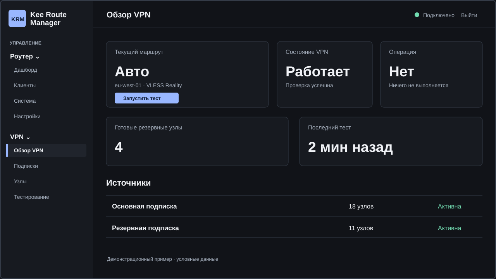
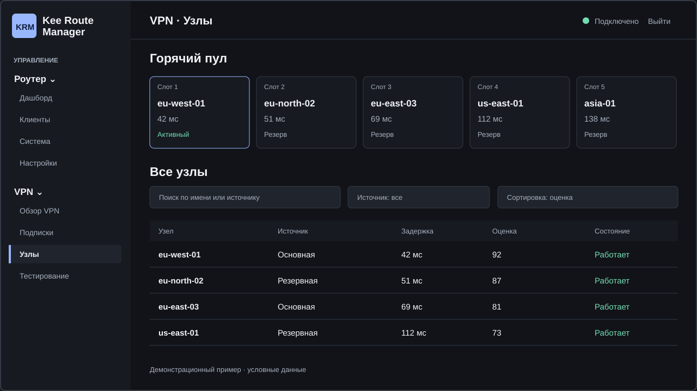
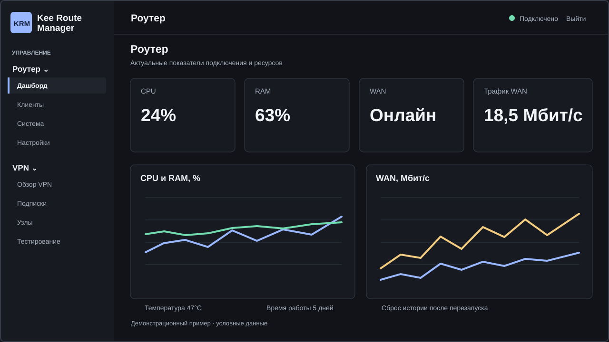

VPN-подписки
Добавление и редактирование источников VLESS и поддерживаемых узлов Xray JSON прямо в панели.
Kee Route Manager управляет Xray-подписками и VPN-узлами, проверяет доступность маршрутов и помогает переключаться между серверами через локальную веб-панель.

Не просто список серверов: KRM помогает видеть состояние маршрута и управлять им на роутере.
Добавление и редактирование источников VLESS и поддерживаемых узлов Xray JSON прямо в панели.
Задержка, оценки и необязательный замер скорости. Горячий пул доступных серверов.
При подтверждённых проблемах VPN выбирает резервный узел. При неясном результате не меняет маршрут.
CPU, RAM, WAN, трафик, временные графики и состояние соединения — в одном месте.
Просмотр устройств локальной сети и управление их политиками через Keenetic.
Роли пользователей, журнал событий, диагностика и подписанные обновления с подтверждением.
Структура экранов основана на текущем Web UI проекта.


Это демонстрационные макеты на основе реальной структуры Web UI, не скриншоты работающего роутера. Значения показаны для примера.
Подходят модели с совместимой штатной прошивкой, Entware и работающим Xray. Важно проверить архитектуру и доступную память.
| Примеры моделей | Архитектура | Статус |
|---|---|---|
| Giga SE / Hero DSL KN-2410 Ultra SE / Peak DSL KN-2510 | MIPS Big Endian | Экспериментально |
| Giga KN-1010 Ultra / Titan KN-1810 | MIPS Little Endian | Экспериментально |
| Ultra / Titan KN-1811 Peak KN-2710 | ARM64 | Экспериментально |
Это примеры, а не список аппаратно подтверждённых моделей: испытания на конкретных устройствах ещё продолжаются. Полная таблица моделей и требований ↗
KRM не заменяет Xray — он работает с уже подготовленным роутером.
Штатная KeeneticOS/NDMS, Entware, рабочий Xray/XKeen, SSH, место на накопителе и резервная копия.
Выберите подписанный релиз, проверьте его Ed25519-подпись и SHA-256, включая сам bootstrap.
После проверки запустите установщик и задайте пути Xray, подписки, проверки сети и режим панели.